벤티365
📲 벤티365 예약 앱 — 1분 접수
성함·연락처·일시·출발/도착지만 입력하면 문자 또는 카카오톡으로 바로 접수됩니다. 홈 화면에 추가하면 앱처럼 쓸 수 있습니다.
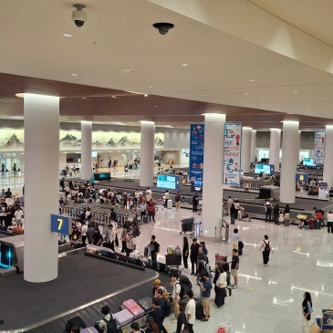
인천공항 2터미널 픽업존 — 7C·1C·10C 승강장 번호 읽는 법
비행기에서 내려 짐을 찾고 2터미널 도착층 픽업존으로 나왔는데, 마중 차가 어디 있는지 몰라 한 바퀴 도신 적 있으시죠. 이 글에서는 인천국제공항공사 공식 안내를 기준으로
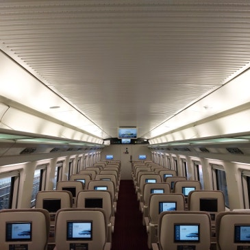
김대중컨벤션센터 가는법 — 송정역 6.3km·주차 8,000원
광주에서 열리는 학회나 박람회 일정을 잡고 나면, 서울택시를 부를지 KTX를 탈지부터 고민하게 됩니다. 요금은 얼마인지, 짐은 어디에 내리는지 한 번에 정리된 자료가 드물
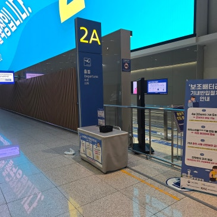
새벽 4시 인천공항 — 올빼미버스 끊긴 70분, 서울택시로
새벽 비행기를 예약하고 나면 전날 밤부터 계산이 시작됩니다. 공항철도 첫차가 몇 시인지, 그 전에 나가려면 무엇을 타야 하는지 헷갈리기 때문입니다. 이 글에서는 새벽 4시
서울택시 심야할증 22시부터 — 40%는 3시간뿐
밤 10시를 넘겨 택시를 잡아본 분이라면 요금이 갑자기 뛴 경험이 있으실 겁니다. "심야할증은 자정부터"라고 알고 계신 분이 많은데, 서울 기준으로는 이미 밤 10시부터
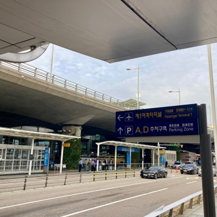
인천공항 수하물 포장 — 골프백 큰 짐, 서울택시 3시간 기준
골프백과 큰 캐리어를 끌고 인천공항 3층에 도착하면 어디서 포장하고 어느 창구로 가야 할지 순간 헷갈립니다. 이 글에서는 인천공항 수하물 포장과 보관, 대형 수하물 위탁
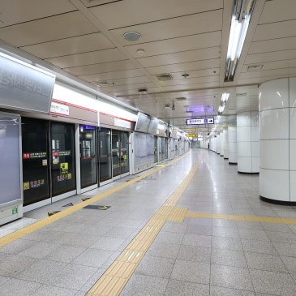
대구 엑스코 지방출장 — 동대구역 5.2km, 서울택시 3시간
대구 엑스코(EXCO)에서 열리는 전시회나 컨퍼런스 일정이 잡히면, 서울에서 어떻게 갈지부터 막막하십니다. 이 글에서는 서울에서 엑스코까지 KTX·버스·차량 세 가지 방법
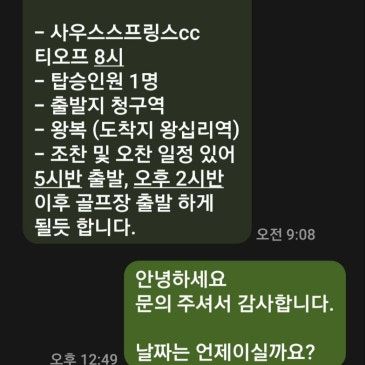
새벽 5시 24분 청구역 출발 — 사우스스프링스CC 골프 픽업 후기
10월 28일(수) 이른 아침 운행 기록입니다. 예약부터 도착까지 사진으로 남겼습니다. ■ 예약 — 카카오톡으로 문의가 왔습니다 골프장 왕복픽업 문의였습니다. 사우스스프링
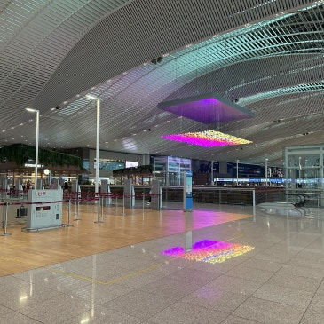
인천공항 교통약자 우대출국장 — 휠체어·고령자 서울택시 동선
부모님이나 휠체어를 이용하는 가족과 함께 인천공항을 나설 때, 가장 걱정되는 것은 긴 줄과 넓은 터미널 안에서의 이동입니다. 이 글에서는 교통약자 우대출국장의 대상과 절차
강릉 지방출장 이동 — KTX 1시간57분 vs 서울택시 2시간40분
강릉으로 출장 일정이 잡히면 가장 먼저 고민되는 것이 "차로 갈까, 기차로 갈까"입니다. 이 글에서는 서울에서 강릉까지 가는 세 가지 방법의 실제 소요 시간과 요금, 그리
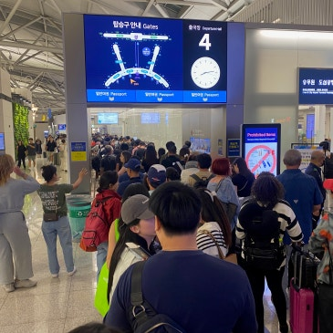
인천공항 환승 — 최소 연결 60분, T1·T2 갈아타기
해외에서 돌아와 다른 나라로 한 번 더 갈아타는 인천공항 환승은 절차 자체는 단순합니다. 다만 도착 터미널과 항공사 조합에 따라 최소 연결 시간이 60분에서 90분까지 벌
새벽 도착, 기다림 없이 — 벤티365 인천공항 픽업
새벽 5시 인천공항. 비행기는 도착했는데 택시 승강장은 길게 늘어서 있습니다. 짐을 끌고 그 줄에 서는 시간이 여행의 마지막 피로입니다. 벤티365는 도착 시간에 맞춰 출
새벽 KTX 첫차 05:03 — 지방출장 서울택시 몇 시 출발
지방출장이 오전 9시라면, 전날 밤부터 새벽 첫차 시간표를 들여다보게 됩니다. 이 글에서는 서울에서 대전·부산·강릉·광주로 가는 KTX 첫차 시각과, 그 첫차를 타기 위해
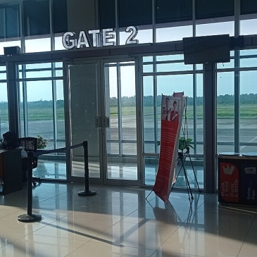
겨울 인천공항 결빙 — 제빙 22분, 서울택시 몇 시 출발?
12월 새벽 비행기를 예약해 두고 눈 예보를 보면 마음이 무거워집니다. 이 글에서는 인천공항이 눈을 어떻게 치우고 항공기를 어떻게 녹이는지, 그래서 출발이 늦어질 때 서울
부산·대전 지방출장 막차 놓쳤을 때 — 서울택시 복귀 계산
부산에서 늦게까지 회의를 마치고 역에 도착했는데, 타려던 KTX가 이미 떠난 뒤였던 경험이 한 번쯤 있으실 겁니다. 이 글에서는 부산·대전에서 서울로 돌아오는 마지막 열차
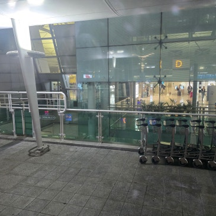
인천공항 배웅 — 3층 출국장, 탑승권 없이 어디까지
가족이 처음 해외로 떠나는 날, 공항까지 차로 모셔다 드리고 어디까지 함께 들어갈 수 있는지 헷갈리셨던 분이 많습니다. 이 글에서는 인천공항 3층 출국장 동선과 탑승권 없
송도컨벤시아 주차요금 30분 1,500원 — 서울택시 행사 이동 계산
송도컨벤시아에서 열리는 박람회·컨퍼런스에 차를 끌고 가면 주차비가 은근히 부담이 됩니다. 2026년 7월 1일 요금 개정으로 5시간만 세워도 1만 원을 넘습니다. 그래서
공항 마중 5분 초과 정차 과태료 4만원 — 서울택시 대기법
비행기 도착 시간에 맞춰 공항에 갔는데, 도착층 앞에서 잠깐 세워둔 차에 과태료가 붙었다는 이야기는 생각보다 흔합니다. 이 글에서는 인천공항과 김포공항 도착층의 정차 기준
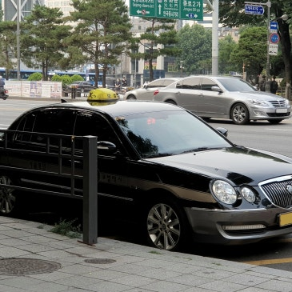
김포공항 국제선 주차장 요금 — 2박3일 9만원, 서울택시와 비교
금요일 저녁 비행기로 김포공항 국제선을 이용하는데, 주차장이 만차라면 어떻게 해야 할지 막막하실 겁니다. 이 글에서는 김포공항 국제선 주차장의 요금 계산법과 만차 대비 순
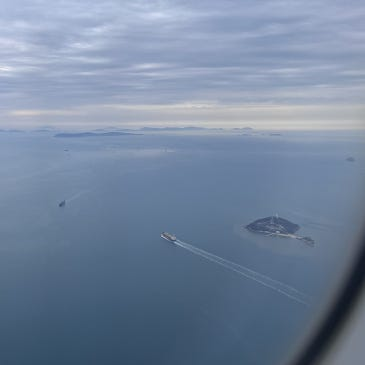
자동입국심사 등록 — 인천공항 T1·T2 위치와 만 7세 기준
해외에서 돌아오는 비행기에서 내려 서울택시를 타기까지, 가장 먼저 발목을 잡는 것이 입국심사 줄입니다. 이 글에서는 자동입국심사(SES)가 무엇인지, 등록 없이 쓸 수 있

KTX 골프백 보관 위치 — 2개까지 규정과 짐칸 자리 잡는 법
KTX 골프백을 들고 주말 라운딩에 나서면, 생각보다 먼저 막히는 것이 "이 짐을 어디에 두나"입니다. KTX 골프백 자리는 좌석처럼 번호가 붙어 있지 않아서, 타기 전에
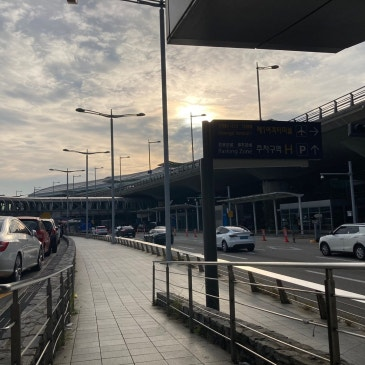
인천공항 제2터미널 주차장 — 단기·장기 선택과 3일 요금
제2터미널에서 출발하는 비행기 시간이 정해지면 다음 고민은 차를 어디에 두고 갈지입니다. 터미널 앞 단기주차장, 셔틀을 타고 가는 장기주차장, 차를 맡기고 바로 들어가는
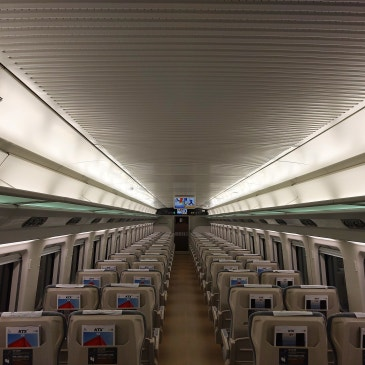
서울에서 대전컨벤션센터(DCC) 가는 법 — KTX 1시간·주차 1만원
대전컨벤션센터(DCC)에서 열리는 학회나 전시회에 참석하려면 "몇 시에 출발해야 늦지 않을까"부터 계산하게 됩니다. 이 글에서는 서울에서 DCC까지 KTX·고속버스·자가용
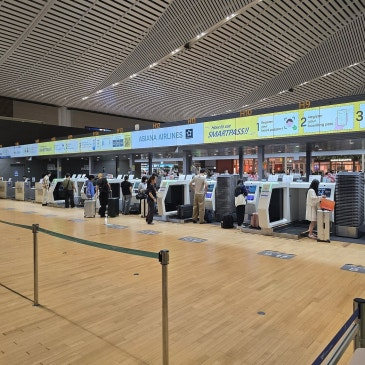
위탁수하물 초과 요금 — 24kg·32kg 넘으면 얼마나 나올까
출국 전날 캐리어를 체중계에 올려놓고 숫자를 보며 손을 멈추신 적 있으시죠. 이 글에서는 위탁수하물 초과 요금이 어떻게 계산되는지, 항공사별 기준과 공항에서 지불하지 않도
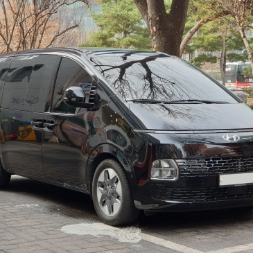
지방출장 차량비 정산 — 세금계산서·현금영수증 기준
지방출장을 다녀온 뒤 정산 서류를 만들다가 영수증이 없어 막히는 경우가 많습니다. 이 글은 출장 차량비를 이동수단별로 어떤 증빙으로 남겨야 하는지, 법 조문과 국세청 기준
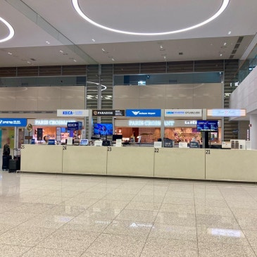
인천공항 환전소·ATM 위치 총정리 — T1·T2 24시간 창구
새벽 비행기인데 환전을 못 하고 집을 나섰다면, 공항에 도착한 뒤 어디로 가야 할지부터 막막합니다. 이 글은 인천공항 환전소와 ATM 위치를 제1·제2터미널 출국 동선 순
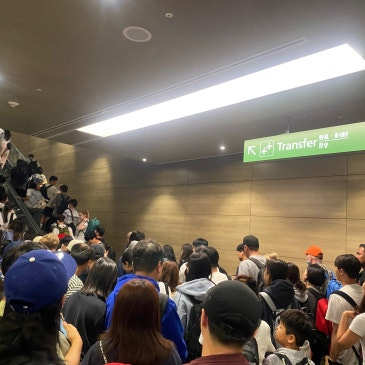
공항 픽업 짐 개수 미리 알리기 — 서울택시 5인승 캐리어·골프백 기준
해외에서 돌아오는 날, 캐리어와 골프백을 몇 개까지 한 차에 실을 수 있을지 몰라 예약을 미루신 적 있으시죠. 이 글에서는 서울택시 5인승 차량으로 공항 픽업 짐을 실을

인천공항 수유실·유모차 대여 총정리 — 유아 동반 출국 동선
아기가 처음 비행기를 타는 날, 부모가 가장 먼저 지치는 곳은 기내가 아니라 공항 안입니다. 이 글에서는 인천공항 유아휴게실(수유실)과 무료 유모차 대여, 어린이놀이시설의
김포공항 국제선 마중·도착 픽업 — 1층 입국장 위치와 주차 동선
가족이 김포공항 국제선으로 들어온다는 연락을 받으면 몇 시에 나가야 할지부터 계산하게 됩니다. 서울택시로 마중을 나갈지, 지하철로 갈지도 이때 함께 정하게 됩니다. 그런데
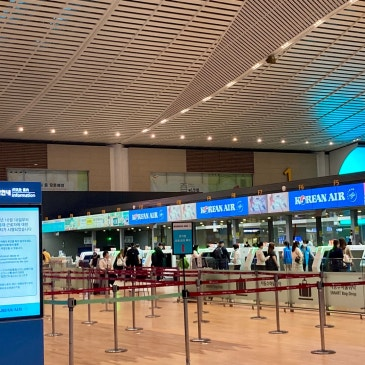
오사카 새벽 비행기 — 인천공항 첫차로 갈 수 있나?
오전 7시대 오사카행 비행기를 예약하고 나면 가장 먼저 드는 생각이 "새벽에 공항까지 어떻게 가지"입니다. 이 글에서는 공항철도 공식 첫차 시각과 인천공항공사 권고 도착
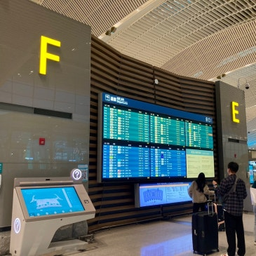
연말·설 연휴 인천공항 이동 — 서울택시 예약은 언제?
연말 휴가와 설 연휴 해외여행을 계획하면서 벌써부터 "그날 새벽에 차를 잡을 수 있을까" 걱정하시는 분이 많습니다. 이 글에서는 인천공항공사가 공개한 연휴 대책 자료와 공